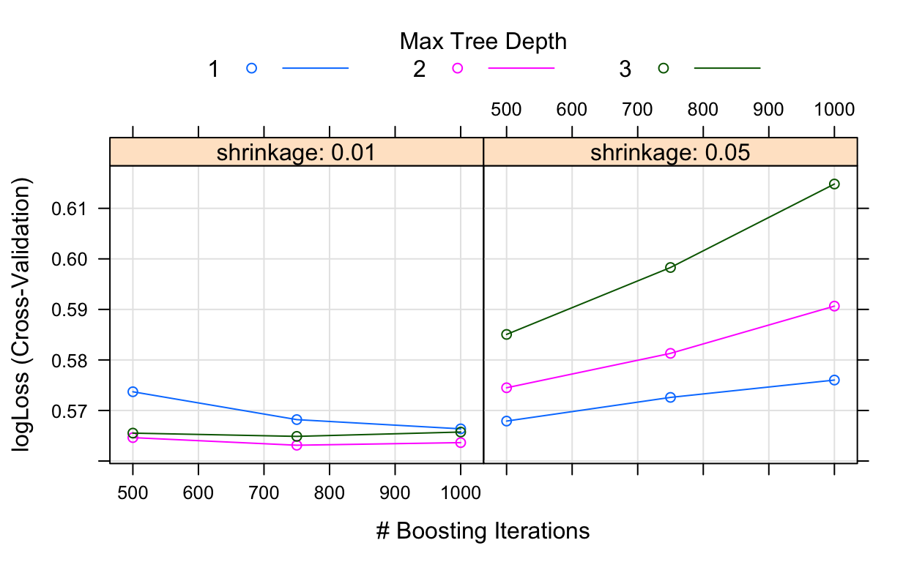
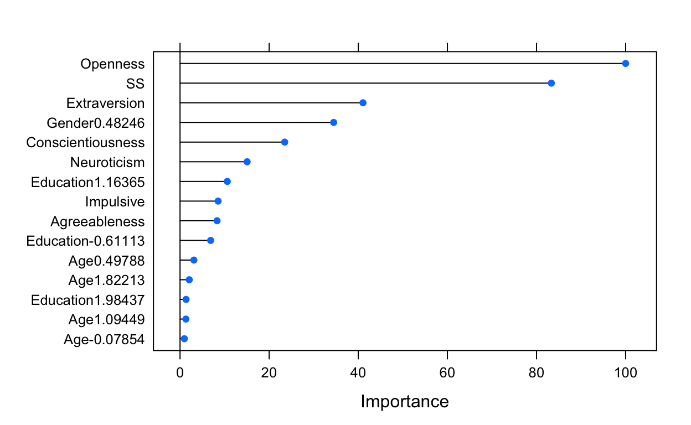
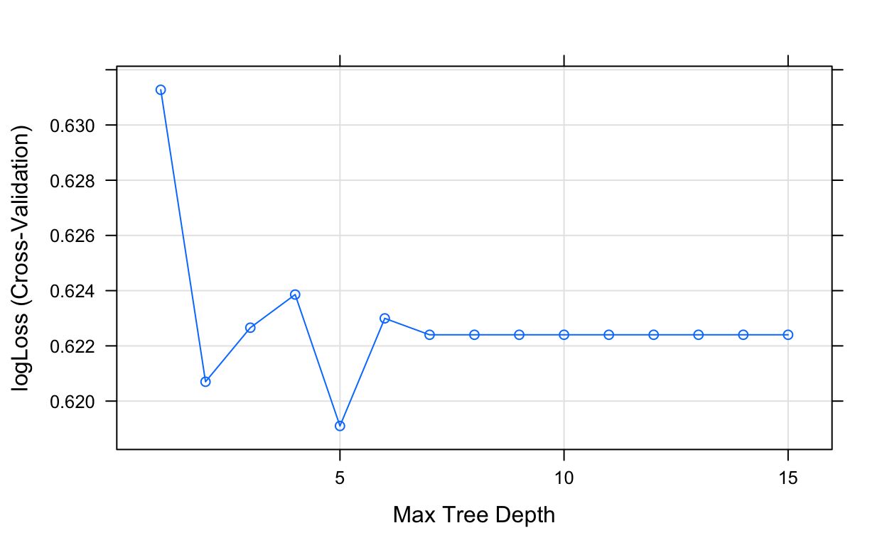
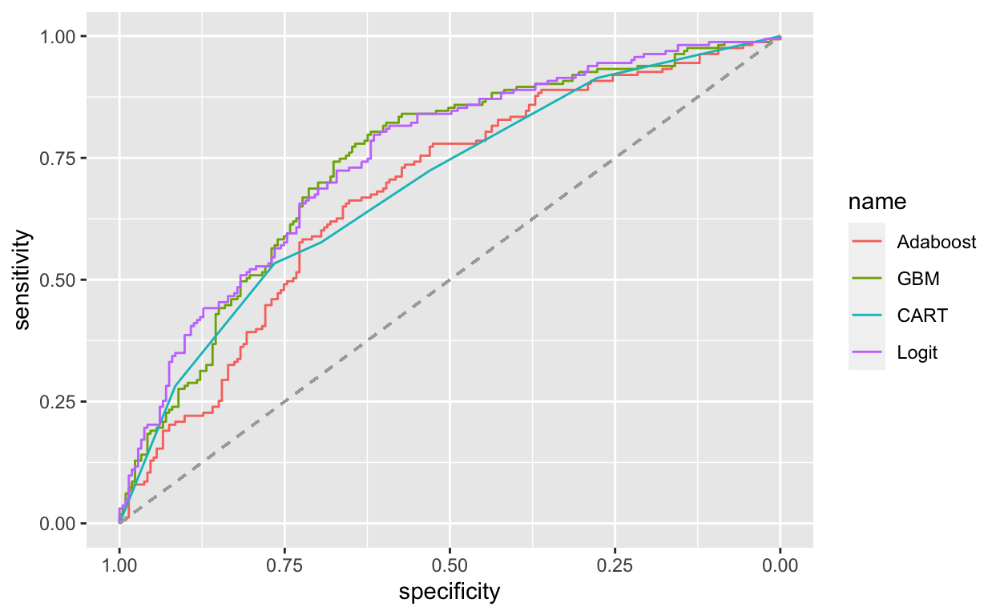

library(mlforsocialscience)
library(learnr)
library(caret)
library(fastAdaboost)
library(gbm)
library(rpart)
library(pROC)In this notebook we (again) use the drug consumption data. The data contains records for 1885 respondents with personality measurements (e.g. Big-5), level of education, age, gender, country of residence and ethnicity as features. In addition, information on the usage of 18 drugs is included.
Source: https://archive.ics.uci.edu/ml/datasets/Drug+consumption+%28quantified%29
data(drugs)First, we build a dummy variable on LSD usage as our outcome of interest.
drugs$D_LSD <- "LSD"
drugs$D_LSD[drugs$LSD == "CL0"] <- "no_LSD"
drugs$D_LSD <- as.factor(drugs$D_LSD)
drugs$D_LSD <- relevel(drugs$D_LSD, "no_LSD")
table(drugs$LSD, drugs$D_LSD)##
## no_LSD LSD
## CL0 1069 0
## CL1 0 259
## CL2 0 177
## CL3 0 214
## CL4 0 97
## CL5 0 56
## CL6 0 13summary(drugs$D_LSD)## no_LSD LSD
## 1069 816Then we split the data into a training and a test part, using createDataPartition from caret.
set.seed(9453)
inTrain <- createDataPartition(drugs$D_LSD,
p = .8,
list = FALSE,
times = 1)
drugs_train <- drugs[inTrain,]
drugs_test <- drugs[-inTrain,]In order to build a set of prediction models it is helpful to follow the caret workflow and first decide how to conduct model tuning. Here we use 5-Fold Cross-Validation, mainly to keep computation time to a minimum. caret offers many performance metrics, however, they are stored in different functions that need to be combined first.
evalStats <- function(...) c(twoClassSummary(...),
defaultSummary(...),
mnLogLoss(...))
?defaultSummary()Now we can specifiy the trainControl object.
ctrl <- trainControl(method = "cv",
number = 5,
summaryFunction = evalStats,
classProbs = TRUE)As a first method we try out AdaBoost as implemented in the fastAdaboost package. Specifically, Adaboost.M1 will be used with three try-out values for the number of iterations.
grid <- expand.grid(nIter = c(50, 100, 150),
method = "Adaboost.M1")Now we can pass these two objects on to train, along with the specification of the model and the method, i.e. adaboost.
set.seed(744)
ada <- train(D_LSD ~ Age + Gender + Education + Neuroticism + Extraversion +
Openness + Agreeableness + Conscientiousness + Impulsive + SS,
data = drugs_train,
method = "adaboost",
trControl = ctrl,
tuneGrid = grid,
metric = "logLoss")List the results of the tuning process.
ada## AdaBoost Classification Trees
##
## 1509 samples
## 10 predictor
## 2 classes: 'no_LSD', 'LSD'
##
## No pre-processing
## Resampling: Cross-Validated (5 fold)
## Summary of sample sizes: 1208, 1208, 1207, 1206, 1207
## Resampling results across tuning parameters:
##
## nIter ROC Sens Spec Accuracy Kappa logLoss
## 50 0.7271662 0.7044540 0.6416324 0.6772729 0.3448294 0.6087233
## 100 0.7276842 0.7172787 0.6340106 0.6812377 0.3509692 0.6112692
## 150 0.7291318 0.7126071 0.6355490 0.6792510 0.3476772 0.6113674
##
## Tuning parameter 'method' was held constant at a value of Adaboost.M1
## logLoss was used to select the optimal model using the smallest value.
## The final values used for the model were nIter = 50 and method = Adaboost.M1.For Gradient Boosting as implemented by the gbm package, we have to take care of a number of tuning parameters. Now the expand.grid is helpful as it creates an object with all possible combinations of our try-out values.
grid <- expand.grid(interaction.depth = 1:3,
n.trees = c(500, 750, 1000),
shrinkage = c(0.05, 0.01),
n.minobsinnode = 10)List the tuning grid…
grid…and begin the tuning process.
set.seed(744)
gbm <- train(D_LSD ~ Age + Gender + Education + Neuroticism + Extraversion +
Openness + Agreeableness + Conscientiousness + Impulsive + SS,
data = drugs_train,
method = "gbm",
trControl = ctrl,
tuneGrid = grid,
metric = "logLoss",
distribution = "bernoulli",
verbose = FALSE)Instead of just printing the results from the tuning process, we can also plot them.
plot(gbm)
We can also extract single trees of the GBM ensemble.
pretty.gbm.tree(gbm$finalModel, i.tree = 1)pretty.gbm.tree(gbm$finalModel, i.tree = 2)A quick look at feature importances.
plot(varImp(gbm), top = 15)
Here we add a single tree for comparison, using CART. With rpart2, max tree depth is the (only) tuning parameter.
grid <- expand.grid(maxdepth = 1:15)Run the tuning process with train().
set.seed(744)
cart <- train(D_LSD ~ Age + Gender + Education + Neuroticism + Extraversion +
Openness + Agreeableness + Conscientiousness + Impulsive + SS,
data = drugs_train,
method = "rpart2",
trControl = ctrl,
tuneGrid = grid,
metric = "logLoss")Plot and print the results.
plot(cart)
cart## CART
##
## 1509 samples
## 10 predictor
## 2 classes: 'no_LSD', 'LSD'
##
## No pre-processing
## Resampling: Cross-Validated (5 fold)
## Summary of sample sizes: 1208, 1208, 1207, 1206, 1207
## Resampling results across tuning parameters:
##
## maxdepth ROC Sens Spec Accuracy Kappa logLoss
## 1 0.6627306 0.6133415 0.7121198 0.6560522 0.3174196 0.6312749
## 2 0.6875873 0.7360193 0.6201174 0.6858471 0.3576784 0.6207002
## 3 0.6946855 0.7489324 0.5818321 0.6765799 0.3343617 0.6226580
## 4 0.6963396 0.7640759 0.5634880 0.6772510 0.3327210 0.6238585
## 5 0.7030770 0.7710254 0.5681386 0.6832113 0.3446079 0.6190994
## 6 0.6977558 0.7628383 0.5727187 0.6805623 0.3402271 0.6229966
## 7 0.7010415 0.7546444 0.5896770 0.6832113 0.3480931 0.6224016
## 8 0.7010415 0.7546444 0.5896770 0.6832113 0.3480931 0.6224016
## 9 0.7010415 0.7546444 0.5896770 0.6832113 0.3480931 0.6224016
## 10 0.7010415 0.7546444 0.5896770 0.6832113 0.3480931 0.6224016
## 11 0.7010415 0.7546444 0.5896770 0.6832113 0.3480931 0.6224016
## 12 0.7010415 0.7546444 0.5896770 0.6832113 0.3480931 0.6224016
## 13 0.7010415 0.7546444 0.5896770 0.6832113 0.3480931 0.6224016
## 14 0.7010415 0.7546444 0.5896770 0.6832113 0.3480931 0.6224016
## 15 0.7010415 0.7546444 0.5896770 0.6832113 0.3480931 0.6224016
##
## logLoss was used to select the optimal model using the smallest value.
## The final value used for the model was maxdepth = 5.Finally we also add a logistic regression model. Obviously we have no tuning parameter here.
set.seed(744)
logit <- train(D_LSD ~ Age + Gender + Education + Neuroticism + Extraversion +
Openness + Agreeableness + Conscientiousness + Impulsive + SS,
data = drugs_train,
method = "glm",
trControl = ctrl)We may want to take a glimpse at the regression results.
summary(logit)##
## Call:
## NULL
##
## Deviance Residuals:
## Min 1Q Median 3Q Max
## -2.5256 -0.8675 -0.4152 0.9249 2.6461
##
## Coefficients:
## Estimate Std. Error z value Pr(>|z|)
## (Intercept) 0.565813 0.511634 1.106 0.268772
## `Age-0.07854` 0.639975 0.176685 3.622 0.000292 ***
## Age0.49788 0.876278 0.196124 4.468 7.90e-06 ***
## Age1.09449 0.801920 0.212161 3.780 0.000157 ***
## Age1.82213 0.950520 0.298562 3.184 0.001454 **
## Age2.59171 -0.699684 0.894267 -0.782 0.433973
## Gender0.48246 -0.695125 0.129095 -5.385 7.26e-08 ***
## `Education-1.7379` -1.190258 0.567812 -2.096 0.036063 *
## `Education-1.43719` -0.757197 0.664241 -1.140 0.254310
## `Education-1.22751` -0.823701 0.562444 -1.465 0.143056
## `Education-0.61113` -0.659053 0.517105 -1.275 0.202485
## `Education-0.05921` -1.157212 0.526021 -2.200 0.027811 *
## Education0.45468 -1.106199 0.515406 -2.146 0.031852 *
## Education1.16365 -1.761557 0.529003 -3.330 0.000869 ***
## Education1.98437 -1.596136 0.580442 -2.750 0.005962 **
## Neuroticism -0.016500 0.073936 -0.223 0.823412
## Extraversion -0.419087 0.077204 -5.428 5.69e-08 ***
## Openness 0.743997 0.075722 9.825 < 2e-16 ***
## Agreeableness -0.074646 0.068224 -1.094 0.273896
## Conscientiousness -0.006828 0.074211 -0.092 0.926692
## Impulsive 0.110132 0.083911 1.312 0.189356
## SS 0.550772 0.090009 6.119 9.41e-10 ***
## ---
## Signif. codes: 0 '***' 0.001 '**' 0.01 '*' 0.05 '.' 0.1 ' ' 1
##
## (Dispersion parameter for binomial family taken to be 1)
##
## Null deviance: 2064.5 on 1508 degrees of freedom
## Residual deviance: 1640.6 on 1487 degrees of freedom
## AIC: 1684.6
##
## Number of Fisher Scoring iterations: 4For evaluating performance, we predict the outcome in the test set in two formats. We use predict for predicting class membership and probabilities based on each model, respectively.
c_ada <- predict(ada, newdata = drugs_test)
c_gbm <- predict(gbm, newdata = drugs_test)
c_cart <- predict(cart, newdata = drugs_test)
c_logit <- predict(logit, newdata = drugs_test)
p_ada <- predict(ada, newdata = drugs_test, type = "prob")
p_gbm <- predict(gbm, newdata = drugs_test, type = "prob")
p_cart <- predict(cart, newdata = drugs_test, type = "prob")
p_logit <- predict(logit, newdata = drugs_test, type = "prob")Given predicted class membership, we can use the function postResample in order to get a short summary of each models’ performance in the test set.
postResample(pred = c_ada, obs = drugs_test$D_LSD)## Accuracy Kappa
## 0.6542553 0.2960627postResample(pred = c_gbm, obs = drugs_test$D_LSD)## Accuracy Kappa
## 0.6835106 0.3532983postResample(pred = c_cart, obs = drugs_test$D_LSD)## Accuracy Kappa
## 0.6436170 0.2723071postResample(pred = c_logit, obs = drugs_test$D_LSD)## Accuracy Kappa
## 0.6755319 0.3355543Creating ROC objects based on predicted probabilities…
ada_roc <- roc(drugs_test$D_LSD, p_ada$LSD)## Setting levels: control = no_LSD, case = LSD## Setting direction: controls < casesgbm_roc <- roc(drugs_test$D_LSD, p_gbm$LSD)## Setting levels: control = no_LSD, case = LSD
## Setting direction: controls < casescart_roc <- roc(drugs_test$D_LSD, p_cart$LSD)## Setting levels: control = no_LSD, case = LSD
## Setting direction: controls < caseslogit_roc <- roc(drugs_test$D_LSD, p_logit$LSD)## Setting levels: control = no_LSD, case = LSD
## Setting direction: controls < cases…and plotting the ROC curves.
ggroc(list(Adaboost = ada_roc,
GBM = gbm_roc,
CART = cart_roc,
Logit = logit_roc)) +
geom_segment(aes(x = 1, xend = 0, y = 0, yend = 1),
color="darkgrey", linetype="dashed")